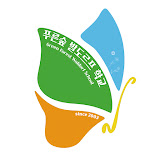

푸른숲 발도르프 어린이집
아이를 바꾸려 하지 않습니다.
아이 안에 있는 힘이 자라나도록 돕습니다.
푸른숲은
무언가를 더 가르치는 곳이 아니라
아이의 리듬을 지키고
몸과 마음이 편안한 상태에서
스스로 자라날 수 있도록 돕는 공간입니다.
푸른숲 이야기
이곳에서 아이는 바뀌지 않습니다
대신 아이가 자기 모습으로 자라납니다.
리듬 있는 하루
아이들은 반복 속에서 안정감을 느낍니다.
매일 같은 흐름 속에서
다음을 예측할 수 있을 때,
아이의 몸과 마음은 편안해집니다.
그 편안함 위에서
놀이와 배움이 시작됩니다.
자연과 함께 자라는 아이
아이들은 자연 속에서 살아갑니다.
흙을 만지고,
바람을 느끼고,
계절의 변화를 몸으로 경험하며
세상과 연결됩니다.
자연은 아이에게
가장 좋은 배움의 공간입니다.
놀이 속에서 자라는 힘
놀이는 아이의 일입니다.
스스로 시작하고 몰입하는 과정 속에서
집중력과 상상력,
그리고 문제를 해결하는 힘이 자랍니다.
푸른숲은
아이의 놀이를 지켜주는 곳입니다.
함께 가꾸는 공동체
푸른숲은 아이만 다니는 곳이 아니라
어른들도 함께 성장하는 공동체입니다.
교사와 부모가 함께 고민하고
아이에게 필요한 환경을 만들어 갑니다.
아이를 바꾸려 하기보다
아이가 스스로 자라날 수 있도록 돕는 곳
이곳은 경기 광주 퇴촌의
푸른숲 발도르프 학교 어린이집입니다.
직접 보고 느껴보시길 바랍니다.
아이의 하루
푸른숲의 하루는 빠르게 흘러가지 않습니다.
아이의 속도에 맞춰 천천히 이어집니다.
그 안에서 아이는 편안해지고,
편안함 속에서 스스로 움직이기 시작합니다.
아침,
천천히 하루를 여는 시간
등원 후
아이들은 자유놀이와 실내놀이로 하루를 시작합니다.
각자의 속도로 교실에 스며들며 몸과 마음을 깨웁니다.
오전,
놀이와 리듬이 이어지는 시간
실내외 놀이, 아침 열기와 라이겐, 간식 시간이 이어집니다.
요일에 따라 예술작업도 진행되며,
아이들은 반복되는 흐름 속에서 안정감을 느낍니다.
낮,
자연과 함께 움직이는 시간
바깥놀이와 산책, 점심식사가 이어집니다.
흙을 밟고, 바람을 느끼고, 계절을 몸으로 경험하며
아이들은 자연 속에서 자라납니다.
오후,
쉬고 다시 채워지는 시간
실내놀이와 이야기 듣기, 낮기, 하원이 이어집니다.
햇살반은 오후에 집으로 향하고,
낮잠반은 편안한 분위기 속에서 충분히 쉽니다.
늦은 오후,
하루를 천천히 마무리하는 시간
오후 간식과 자유놀이, 닫기가 이어집니다.
놀이를 정리하며 하루를 돌아보고,
아이들은 편안한 마음으로 집으로 돌아갑니다.
하루 리듬 한눈에 보기
- 07:30–09:00 자유놀이 및 실내놀이
- 09:00–10:00 실내 / 바깥놀이
- 10:00–10:30 아침 열기와 라이겐
- 10:30–11:00 오전 간식
- 11:00–12:00 바깥놀이 / 산책
- 12:00–13:00 점심식사
- 13:00–13:30 실내놀이
- 13:30–14:00 이야기 듣기, 낮기
- 14:00 햇살반 하원
- 14:30–16:00 낮잠반 낮잠
- 16:00 낮잠반 하원
- 16:30–17:00 오후 간식
- 17:00–18:00 자유놀이, 닫기
푸른숲의 하루는 무언가를 더 시키기 위해 채워지지 않습니다. 아이에게 필요한 만큼, 아이의 속도로 채워집니다.
푸른숲에서 자라나는 힘
푸른숲은 아이를 더 빠르게 앞서가게 하기보다
제때 깊이 자라게 하는 곳입니다.
놀이와 리듬, 관계와 자연 속에서
아이는 자기 안의 힘을 조금씩 키워갑니다.
스스로 시작하는 힘
아이는 정해진 답을 따라가기보다
스스로 놀이를 만들고 움직이며
자기 안의 의지를 키워갑니다.
몰입하는 힘
반복되는 리듬과 충분한 놀이 속에서
아이는 한 가지에 깊이 머무는 경험을 합니다.
그 경험은 집중력의 바탕이 됩니다.
느끼는 힘
흙을 만지고, 바람을 느끼고,
계절의 변화를 몸으로 경험하며
아이의 감각과 정서는 풍성하게 자라납니다.
관계를 맺는 힘
친구와 함께 놀고, 기다리고, 부딪히고,
다시 이어가는 과정 속에서
아이는 관계의 감각을 배워갑니다.
감정을 다루는 힘
안정된 하루의 흐름과 따뜻한 관계 안에서
아이는 자기 감정을 조금씩 알아차리고
편안하게 다루는 힘을 키워갑니다.
자기답게 자라는 힘
푸른숲은 아이를 같은 모습으로 만들지 않습니다.
각자의 리듬과 기질을 존중하며,
아이가 자기답게 자라도록 돕습니다.
푸른숲에서의 성장은
더 빨리, 더 많이 해내는 것이 아닙니다.
편안한 몸과 마음 위에서
스스로 살아갈 힘을 키워가는 과정입니다.
아이를 바꾸는 교육이 아니라
아이를 이해하는 교육을 찾고 계신다면
푸른숲을 직접 만나보세요.
블로그
푸른숲의 하루와 아이들의 변화가 차곡차곡 담겨 있습니다. 글을 통해 천천히 느껴보세요.
인스타그램
아이들의 일상과 순간들을 가장 빠르게 전합니다. 지금의 푸른숲을 가볍게 만나보세요.

푸른숲발도르프 학교
어린이집 이후의 성장까지 이어지는 공간입니다. 아이들의 다음 이야기를 확인해보세요.
유튜브
어린이집 이후, 아이들은 어떻게 자라날까요?
푸른숲 발도르프 학교의 이야기를 영상으로 확인해보세요.